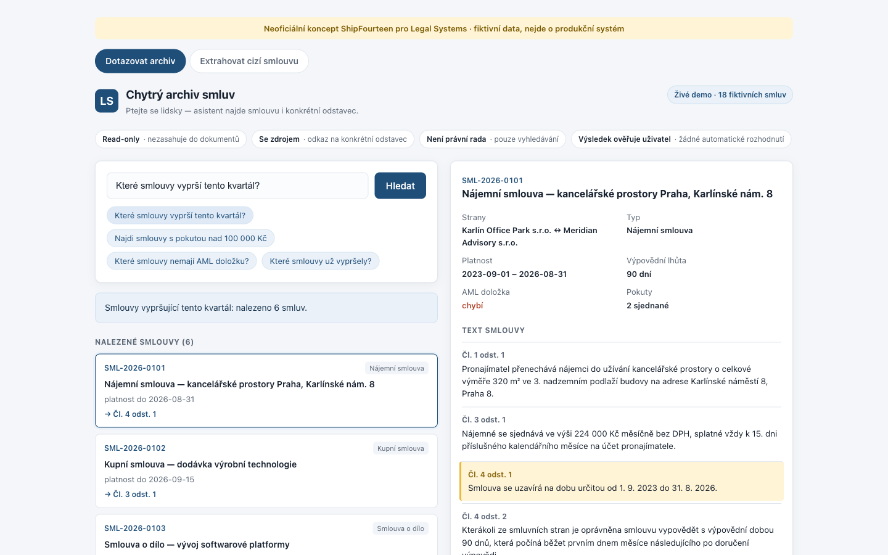
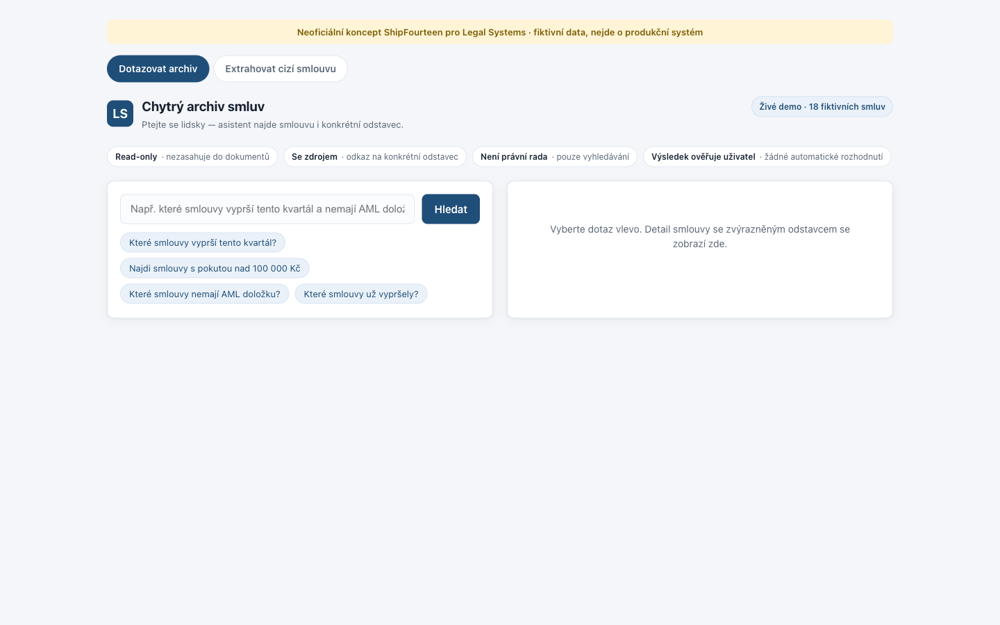

2026 · Concept demo · Fictional data
Smart Contract Archive
Ask a contract archive a question in plain Czech — "which contracts expire this quarter and have no AML clause?" — and get back the matching contracts with the exact paragraph highlighted. A working concept, built on eighteen invented contracts.

The design problem is trust, not search
Lawyers do not want a chatbot's summary of their contract. They want to be taken to the clause and shown it. So the interface never paraphrases: it answers with a count, a list, and a jump straight to the paragraph, highlighted in place.
- Four limits stated across the top. Read-only. Cites a source. Not legal advice. The user verifies the result. These are the objections, answered before the first query.
- Two panes, fixed roles. Left asks and lists; right shows the document. The document pane never becomes a chat.
- Citations are the interface. Each result carries "→ Čl. 4 odst. 1" — click it and the right pane scrolls to that article with an amber marker.
- Suggested queries as chips. Four real questions the archive can answer, so nobody has to guess the syntax.
- Risk shown as data, not colour alone. A missing AML clause appears as the word "chybí" in red inside an otherwise plain metadata grid.

Palette
A concept, not a product. The page labels itself as an unofficial concept on fictional data, and the archive it queries is eighteen invented contracts — no real agreement, party or client document appears anywhere in it.